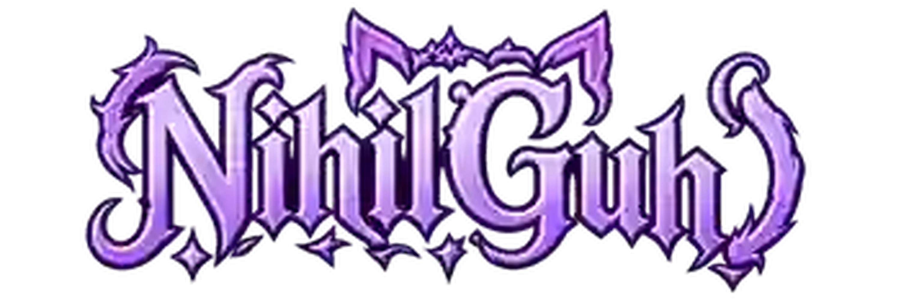

TRANSMISSÃO
OFFLINE
Próxima transmissão
Tempo restante04:00:00
Comunidadeaté +4h
Tempo total4h → 8h

Entre quando a Twitch estiver online e dispute contra a comunidade.
Apoios continuam pela LivePix. Durante a live, eventos e desafios também podem aumentar o cronômetro.
Discord para acompanhar avisos e conversar; Coret.cloud para a comunidade fora da transmissão.